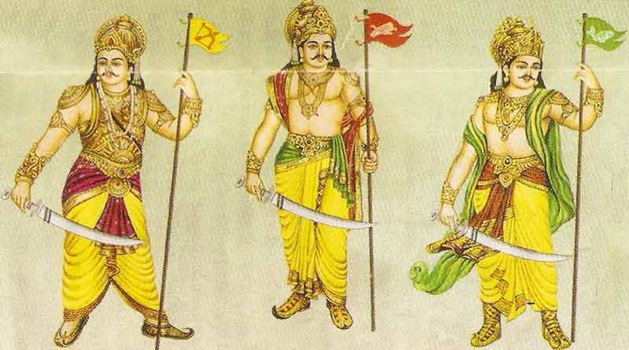

The Chozha Dynasty is one of the dynasties which ruled the South of India, including states like Tamilnadu. But their pride and territiorial power didn't stop with India, their rule continued beyond seas, places like Maldives and Sri Lanka were ruled by them. This shows their great power. In tamil their is a group of kings called, மூவேந்தர் (Muvendhar). Muvendhar includes Chozhas, Cheras and Pandiyas. These three are special because these three dynasties have dominated and ruled South India, they have names like: Three Crowned Rulers, Three Glorified by heaven, etc.. The region ruled by Chozhas was called Chozha Nadu, the Chozha dynasty has seen a lot of powerful rulers in it's time, this website talks about the Chozha dynasty who have ruled South India for more than 1500 years. (This website only focuses on the medieval/imperial Chozhas.
The Chozhas became prominent in the 9th century and are believed to have overthrown the Pallavas (powerful rulers of South india) in South India.

After Kulothunga Chozha, the later kings tried to keep the Chozha Dynasty stable but failed. The Chozha dynasty suffered and came to a downfall at the end of the 13th century. The Cholas were replaced by Pandyas and the Hoysalas in the south, and of the later Chalukyas by the Yadavas and the Kakatiyas. Though the Chozha Dynasty fell their architectural monuments and great rule would never fade from history. This is a table is the list of imperial Chozha Rulers:
| Reign | Ruler | Contributions |
|---|---|---|
| Vijayalaya Chozhan | 848–891 AD | It was Vijayalaya Chozhan who founded the imperial Chozhas, he was earlier a feudatory of the Pallavas and he captured Tanjore |
| Aditya Chozhan | 891-907 AD | Aditya Chozhan was one of the remarkable rulers in the Chozha dynasty. He defeated the Pallava ruler Aparajita and annexed Tondaimandalam to Chozha Nadu |
| Parantaka Chozhan | 807-950 AD | Parantaka the first was later in line, he defeated the Pandyas at the Battle of Vellur. He was defeated by the Rashtrakuta king, Krishna the third, in the battle of Takkolam. Krishna took over Tondaimandalam. Parantaka was also a great builder of temples like his heirs and ancestors. |
| Raja Raja Chozhan | 985-1014 AD | After these rulers Chozha Dynasty met it's Golden Era with the rulers, Raja Raja Chozhan and Rajendra Chozhan. Raja Chozhan also known as Arulmozhi Varman, defeated the Chera ruler Bhaskara Ravivarman in the naval battle of Kandalur Salai and destroyed the Chera navy. He also defeated the Pandya ruler, Amarabhujanaga and got hold of the Pandya country. He annexed Northen Sri Lanka and Maldives. These are only a few of his battles and acheivements, in short he extended the Chozha Dynasty to a great extent. |
| Rajendra Chozhan | 1014-1044 AD | Rajendra Chozhan I, as his father wished he extended the Chozha Dynasty more than Raja Raja Chozhan. During his reign the whole of Sri Lanka was under the Chozhas. He defeated the Chalukya king Jayasimha and set the Tunghabadra river as the border between Chalukyas and Chozhas. Rajendra Chozha also had a successful campaign in northern India. He created a city named GangaikondaChozhapuram and constructed the famous Rajesvaram Temple. At his death the Chozha Dynasty was at it's peak. |